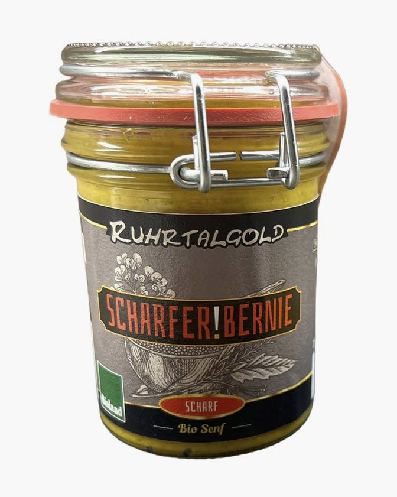
Start/Sortiment
Was vom Acker kommt.
Alles hier wächst auf unseren eigenen Flächen und wird auf dem Hof verarbeitet. Sie können es freitags am Gederfeldweg abholen oder über den Korb anfragen. Wir bestätigen Verfügbarkeit, Versand und Zahlung per E-Mail.
Preise Stand Oktober 2026, inklusive 7 % Mehrwertsteuer, übernommen aus unserem Onlineshop. Wo kein Preis steht, nennen wir ihn Ihnen auf Anfrage. Im Onlineshop ist der Versand ab 50 € Bestellwert kostenfrei.
Kartoffeln
Gebinde
Senf
Senfmanufaktur
Delikatess-Bio-Senf aus eigener Herstellung: hundert Prozent hofeigene Saat, traditionell auf Granitsteinen vermahlen. Drei Sorten, von mittelscharf bis extra scharf.
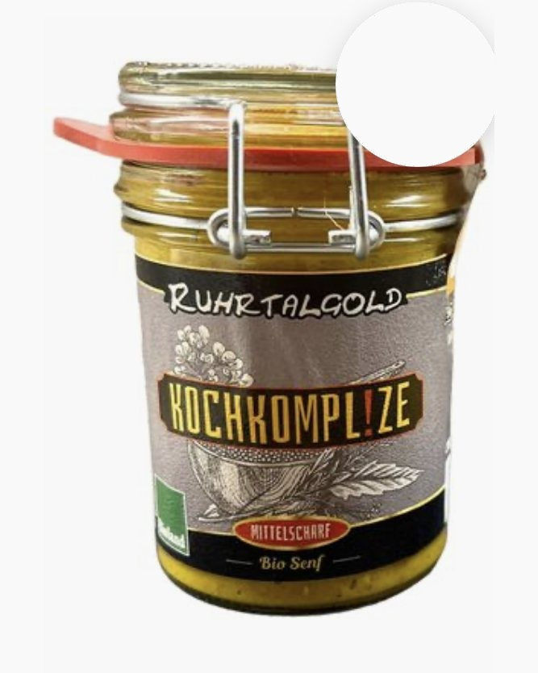
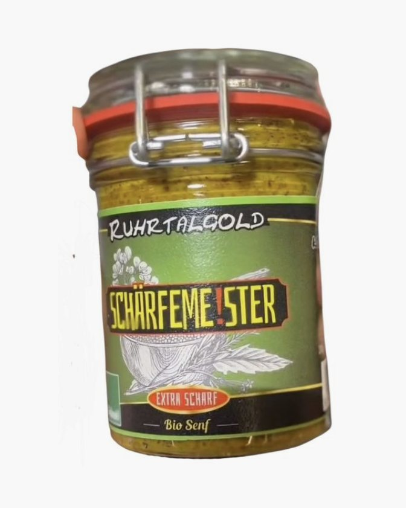
Speiseöle
Ölmanufaktur
Delikatess-Speiseöle, kaltgepresst aus hofeigenen Saaten. Alle Öle werden ohne Erhitzen gepresst, damit die Inhaltsstoffe erhalten bleiben.


Nudeln
Dinkelnudeln
Dinkelnudeln aus Vollkorn und Auszugsmehl, als Spiralen und Wellen. Alles vom eigenen Dinkel.
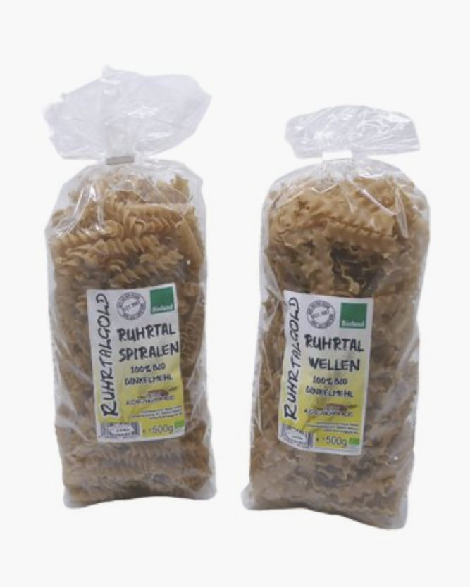
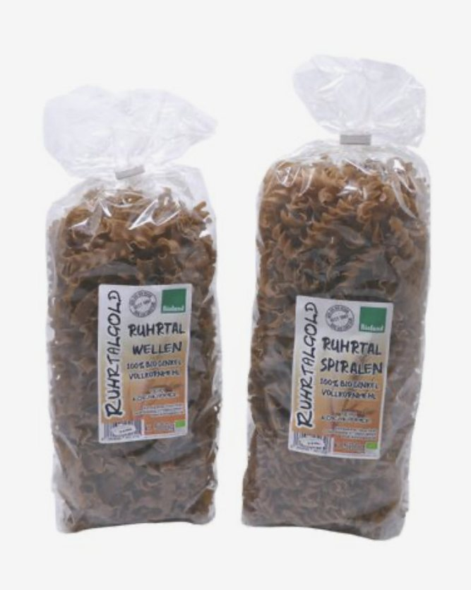
Mehle
Mehle in Bäckerqualität
Weizen Type 550, Roggen Type 1150, Dinkel Type 630 und von allen dreien das Vollkornmehl. Dieselbe Qualität, die die Bäckereien bekommen, in 1, 5 und 25 Kilogramm.
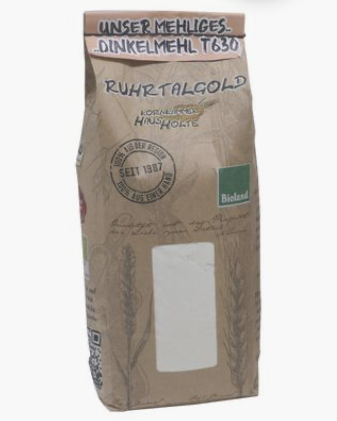
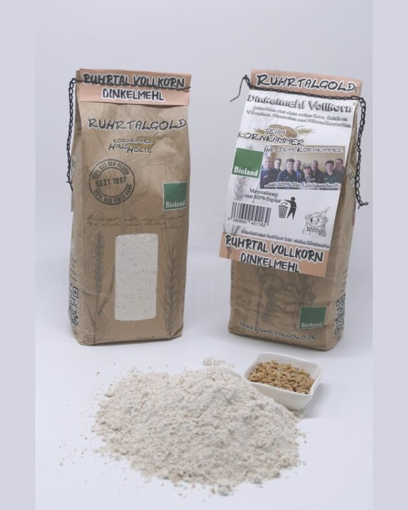
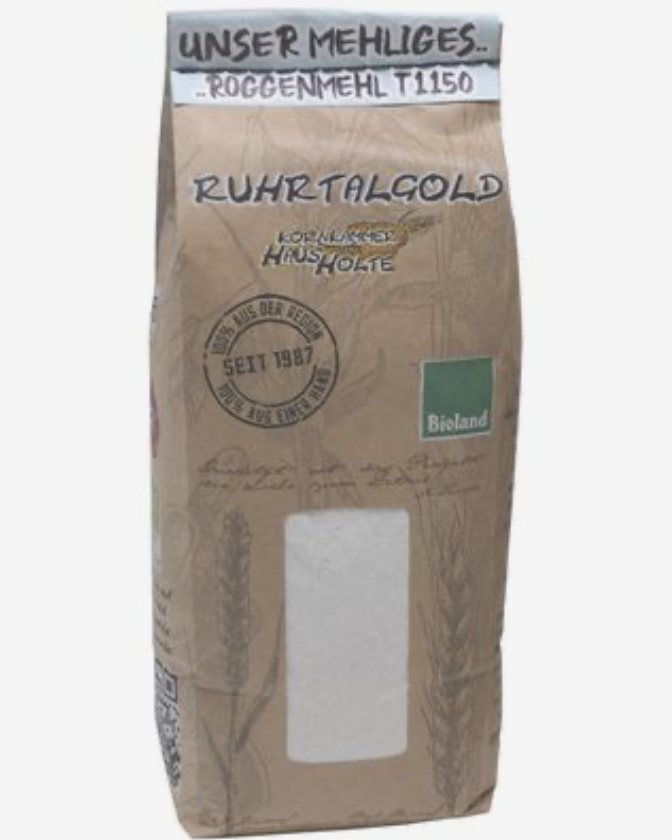
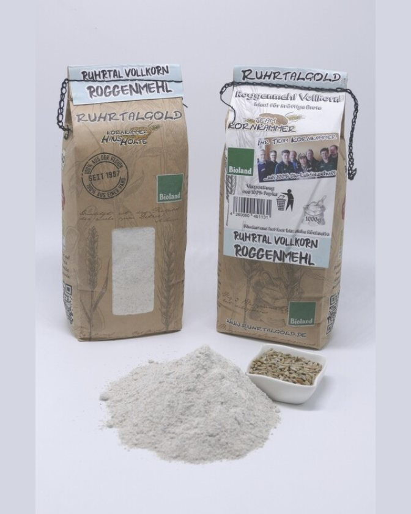
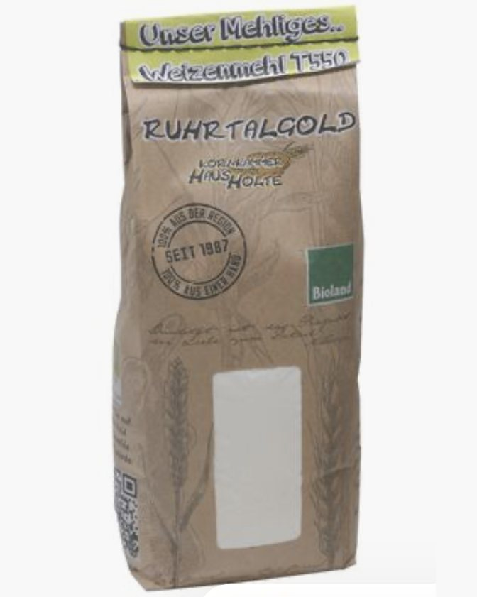
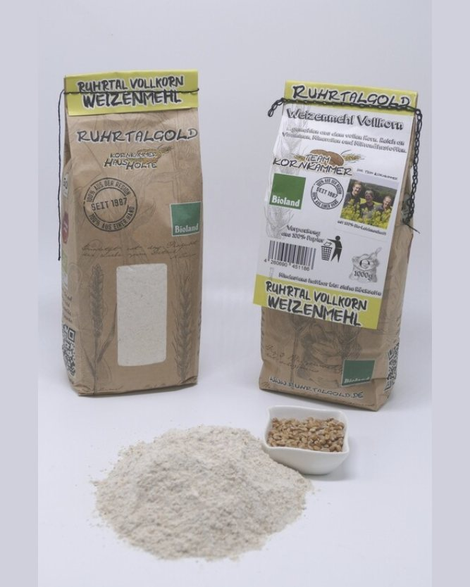
Körner & Flocken
Körner und Flocken
Ganze Körner von Weizen, Roggen und Dinkel, dazu Haferkerne und zartblättrige Haferflocken, alles vom eigenen Acker.
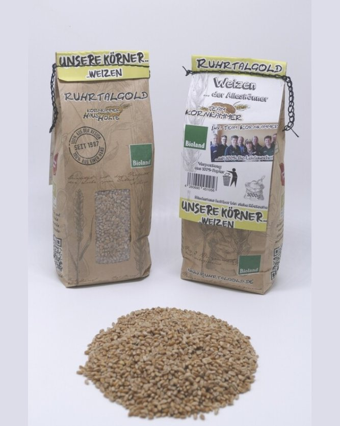
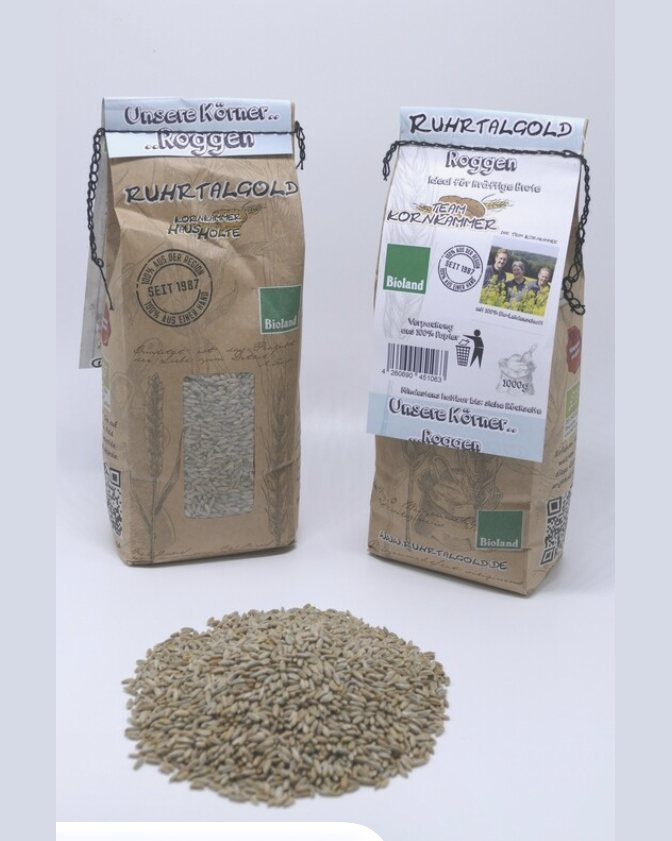


Körner & Flocken
Bio Haferflocken, zartblatt
Preis auf Anfrage Vom eigenen Hafer · 500 g und weitere GebindeKartoffeln
Holter Knolle und Ruhrtalgold
Bio-Kartoffeln von Flächen in Witten und Dortmund, nach Sorte und Kochtyp. Nicht alle Sorten sind gleichzeitig verfügbar; was gerade da ist, sagen wir Ihnen gern.


Inspiration für die Küche
Welche Kartoffel wofür.
Drei Kochtypen, fünf Sorten vom eigenen Acker. Rezepte vom Hof ergänzen wir, sobald sie vorliegen; bis dahin die Küchenregel, nach der wir selbst sortieren.
Vorwiegend festkochend
Pommes, Gratin, Ofen- und Salzkartoffeln
Vorwiegend festkochende Sorten bleiben außen fest und werden innen locker.
Festkochend
Kartoffelsalat, Pell- und Bratkartoffeln
Festkochende Sorten behalten beim Kochen ihre Form, der Stärkegehalt liegt bei etwa 14 Prozent.
Mehlig
Püree, Klöße und Suppen
Mehlige Sorten zerfallen beim Kochen schnell, der Stärkegehalt liegt bei etwa 16,5 Prozent.

Ruhrtalgold · Mehle
Bio Dinkelmehl Type 630
Bäckerqualität
4,79 € 1 kg
Hofverkauf
Oder Sie kommen einfach vorbei.
Jeden Freitag von 8 bis 17 Uhr verkaufen wir direkt am Hof, Gederfeldweg 37 in Witten. Fällt ein Feiertag auf den Freitag, sind wir am Donnerstag da. Telefonische Absprachen sind ebenfalls möglich.
Anfahrt und Zeiten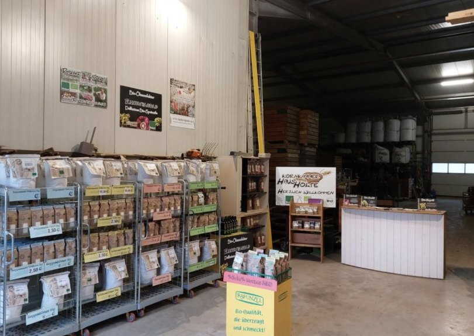